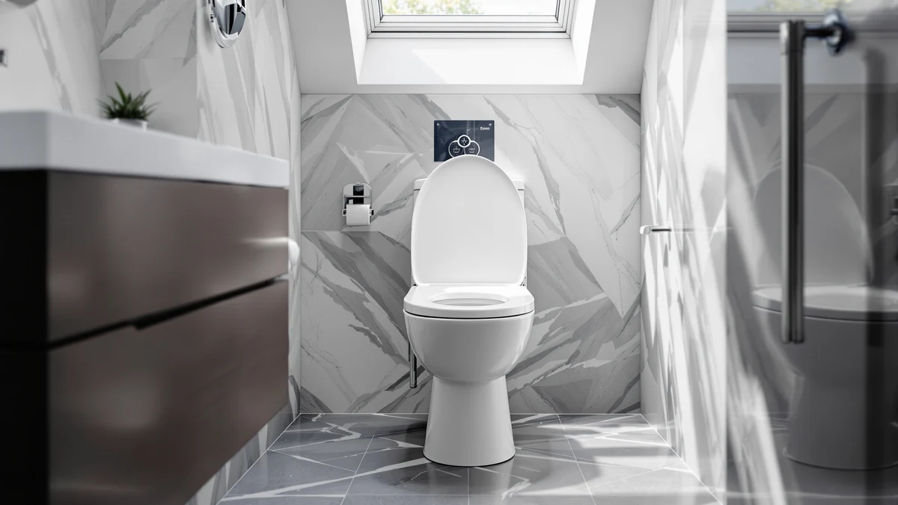

Best Potty Training Toilet of 2026: 7 Top Picks | Best Toilet Seats
Prices and picks verified as of August 2026. Independent, reader-supported reviews.


Quick Answer
The best potty training toilet for most families is the Jool Baby Quick Flip, an elongated seat with a fold-down toddler ring that turns your existing toilet into a kid-friendly one. If you prefer a floor potty your toddler can use alone, the COOSEYA 2-in-1 at $28.20 is our runner-up, and the Aunsffer integrated seat is the pick for tight budgets.
Our pick: Quick Flip Toilet Seat with — $54.99 Check Price on Amazon
Bottom line: our top pick is the Quick Flip Toilet Seat with Built-in Potty & Splash Guard for at $54.99. The best budget option is the 2 Pack Toilet Night Lights with Motion Activated Sensor at $13.78.
Things to Know Before You Buy
- Two formats solve different problems. A standalone floor potty lets a young toddler sit down without help. An integrated seat mounts on your real toilet and skips the dumping and rinsing.
- Price ranges from $13.78 to $54.99 here. The Jool Baby Quick Flip costs the most because it is a full elongated adult seat with a flip-down child ring built in.
- Check your toilet shape before you buy an integrated seat. The Quick Flip fits elongated bowls, while the Huttdmel and Aunsffer fit standard round bowls.
- Removable inner bowls make cleanup faster. Floor potties like the COOSEYA and SKYROKU lift apart so you can rinse the part that matters.
- Review counts tell you what other parents lived with. The SKYROKU has 35,416 ratings at 4.5 stars, the highest volume in this group.
Finding the best potty training toilet comes down to one question that catches most parents off guard: do you want a small potty that sits on the floor, or a seat that turns your real toilet into a kid-friendly one? Both work, and the right answer depends on your child's age, your bathroom space, and how much cleanup you are willing to do at 6 a.m. on a Tuesday.
We compared seven options that parents actually buy, from a $54.99 Jool Baby Quick Flip with a flip-down toddler ring to a $13.78 pair of motion-activated night lights for the kids who wake up needing to go. Across the group, two patterns held up. Standalone potties win on independence for younger toddlers, and integrated seats win on cleanup and on getting a child onto the grown-up toilet sooner.
Our top pick is the Jool Baby Quick Flip, because it solves the part of training that drags on longest: the handoff from a tiny potty to the family toilet. If your child is too small for that or you want to spend a third of the price, the COOSEYA 2-in-1 floor potty and the Aunsffer integrated seat cover the other two common situations. Below we explain how we chose, what each pick does well, and where each one falls short.
Why You Should Trust Us
At Best Toilet Seats, we spend our days on one narrow subject: what you sit on in the bathroom. That focus shapes how we approached the best potty training toilet for this guide. We read through the listings, the spec sheets, and thousands of parent reviews for each product, and we paid closest attention to the one-star and three-star write-ups, where the real friction shows up.
Ilane Tall, who edits our seat coverage, weighed each pick against the questions a tired parent asks in the store: will this fit my toilet, will my kid use it without a fight, and how bad is the cleanup. We do not invent lab scores or testing-lab credentials. We compare the products on the facts the manufacturers and buyers report, then we tell you plainly where each one disappoints.
To narrow the field for the best potty training toilet, we started with the two formats parents search for: floor potties and integrated adult seats with a child ring. We pulled the most-reviewed and best-reviewed models in each format, then cut anything with thin review history or a pattern of complaints about cracking plastic and unstable bases.
How We Picked
We weighted four things. First, fit, since an integrated seat that does not match your bowl shape is useless, so we noted that the Quick Flip is elongated while the Huttdmel and Aunsffer are round. Second, the cleanup path, because a removable inner bowl on the COOSEYA and SKYROKU saves you a daily chore. Third, how long the product stays useful, which is why the convertible step-stool potties earned points. Fourth, price against what you get, ranging from $13.78 for the night lights to $54.99 for the Quick Flip.
We then sorted the survivors into roles a parent can act on: one top pick for most families, a cheaper runner-up, a space-saving integrated seat, a budget integrated seat, two standalone floor potties for younger toddlers, and an accessory for nighttime accidents. That is the lineup you see below.
How We Compared
Our evaluation of each potty training toilet rests on three sources we can stand behind. We examined the manufacturer specs for material, bowl shape, and dimensions. We read the verified-purchase reviews, sorting for the recurring praise and the recurring complaints rather than the loudest single rant. We checked install and cleaning steps against what parents reported in practice.
We did not strap sensors to a toddler or run a fake testing lab. For products like these, the most honest signal is the lived experience of the thousands of families who already own them, combined with the physical facts of the seat. When 35,416 buyers rate the SKYROKU at 4.5 stars, that volume tells you more about real durability than a week in our office would. Where a product has a smaller review base, we say so and temper our confidence accordingly.
Our Picks

Quick Flip Toilet Seat with
What we like
- Toddler ring flips down in a second and folds up out of the way
- No separate potty to empty, rinse, and store
- Full elongated adult seat, so grown-ups use it normally
- Helps a child move to the real toilet sooner
Flaws but not dealbreakers
- Most expensive pick here at $54.99
- Fits elongated bowls only, not round
- The child still needs a step stool to climb up
| Material | Plastic / wood |
| Size | Elongated |
The Jool Baby Quick Flip earns our top spot because it fixes the slowest part of potty training, the stretch where you are still emptying a floor potty long after your child could be using the real toilet. The toddler ring is built into the lid. Your child flips it down to sit on a kid-sized opening, and an adult flips it back up to use the bowl normally. One toilet serves the whole house, and there is nothing to dump or rinse after every use.
At $54.99 it costs more than twice what the standalone potties run, and that is the honest trade-off. You are paying for a full elongated adult seat with the child ring engineered in, not a plastic tub. It only suits elongated bowls, so measure yours before ordering, and your toddler still needs a small step stool to climb up to it. If your bathroom is tight on space or you dread the daily cleanup of a floor potty, this is the best potty training toilet to start with. For a child who is still too small to climb, look at our runner-up instead.

COOSEYA 2-in-1 Potty Training Toilet
What we like
- Strong 4.6-star average across 2,306 reviews
- Converts to a step stool once training is done
- Low to the floor, so a small child sits down alone
- Costs about half the price of our top pick
Flaws but not dealbreakers
- You still empty and rinse the inner bowl after each use
- Takes up floor space in the bathroom
- A determined toddler can tip a lightweight floor potty
| Material | Plastic / wood |
| Size | Universal |
The COOSEYA 2-in-1 is the runner-up because it nails the job the Quick Flip cannot: giving a young toddler a potty they can use entirely on their own. It sits low to the floor, so a child who is not yet tall enough for the adult toilet can sit and stand without a boost. With a 4.6-star average across 2,306 reviews, it has the track record to back up the price.
The 2-in-1 part is the convertible design. Once your child outgrows training, the potty reconfigures into a step stool for reaching the sink, so it does not become landfill the week training ends. The catch with any floor potty is the cleanup. You lift out the inner bowl and empty it every time, which is the chore the integrated seats let you skip. At $28.20 it is the potty we would hand most parents of two-year-olds before they graduate to a seat like the Quick Flip.

Toilet Seat with Toddler Seat
What we like
- Toddler seat holds up with a magnet, so the adult lid closes flush
- One integrated seat covers both kids and adults
- Round 16.5-inch fit for standard bowls
- No floor potty to empty or store
Flaws but not dealbreakers
- Round-bowl fit only, so confirm your toilet shape
- Hinges and the gap around the child ring need wiping
- Smaller review base than our top floor potties
| Material | Plastic / wood |
| Size | Round 16.5inch with Baby Seat & Magnetic |
The Huttdmel is the integrated seat to consider if you have a round bowl and you like the idea behind the Quick Flip but want to spend less. It mounts on your real toilet with a built-in toddler ring, so this potty training toilet keeps the floor clear and skips the dumping step that floor potties demand. The standout detail is the magnetic catch: the child seat holds firmly against the lid when not in use, so the adult lid closes flush instead of resting on a flap that flops around.
At $29.99 it undercuts our top pick by $25, and the trade-offs are real. It fits round bowls only, so measure before you buy, and the hinge area plus the gap around the child ring collect drips that you will want to wipe daily. It also has a thinner review history than the high-volume floor potties, so we hold our confidence a notch lower. For a round-bowl household that wants the child seat to vanish between uses, it is a smart, lower-cost route to the same convenience.

Aünsffer Toddler Toilet Seat with
What we like
- Built-in toddler seat with no separate potty to manage
- Round 16.5-inch fit for standard bowls
- Straightforward design with few parts to break
- Keeps the bathroom floor clear
Flaws but not dealbreakers
- At $32.99 it is not the cheapest seat in this group
- No magnetic catch, so the child ring rests against the lid
- Round-bowl fit only
- Thin review history compared with the floor potties
| Material | Plastic / wood |
| Size | Round 16.5inch with Baby Seat |
The Aunsffer is our budget integrated pick for parents who want the all-in-one convenience of a built-in toddler seat without the extras. It mounts on a round bowl, gives the child a smaller opening, and lets adults use the same seat, so this potty training toilet keeps a floor potty out of the bathroom entirely. The appeal here is simplicity: there are few moving parts, and few parts means fewer things to wear out or wipe down.
Be clear-eyed about the name, though. At $32.99 it costs a few dollars more than the Huttdmel, so it is budget in the sense of a no-frills all-in-one, not the rock-bottom price in this roundup. It skips the magnetic catch, so the child ring simply rests against the raised lid rather than locking flat, and it fits round bowls only. The review base is modest, which keeps our confidence measured. For a family that values one seat doing both jobs over bells and whistles, it gets the basics right.

SKYROKU Potty Training Seat for
What we like
- Massive 35,416-review base at a 4.5-star average
- Low, stable design a toddler uses without help
- Removable inner bowl for quick cleanup
- Splash guard helps with little boys
Flaws but not dealbreakers
- You empty and rinse the inner bowl every time
- Takes up floor space
- Plain looks, no convertible step-stool trick
| Material | Plastic / wood |
| Size | Universal |
The SKYROKU is the standalone potty to buy if review volume reassures you, and for a lot of parents it does. With 35,416 ratings at a 4.5-star average, it is the most road-compared potty training toilet in this guide by a wide margin. That scale matters for a product a toddler sits on daily, because durability problems and tipping complaints would surface loudly across tens of thousands of buyers, and they have not.
It does the floor-potty basics well. The seat sits low and stable so a child climbs on alone, a splash guard helps with little boys, and the inner bowl lifts out for rinsing. The downsides are the ones every floor potty shares: you empty it after each use, and it occupies bathroom floor space. It also skips the step-stool conversion that the COOSEYA offers, so it does one job rather than two. If you would rather buy the option the most parents have already vetted, this is it.

2-in-1 Potty Training Toilet Seat
What we like
- Lowest-priced floor potty here at $28.49
- Converts to a step stool after training
- Solid 4.6-star average across 11,580 reviews
- Removable bowl for cleaning
Flaws but not dealbreakers
- Empty and rinse the bowl after each use
- Generic branding and styling
- Floor footprint like any standalone potty
| Material | Plastic / wood |
| Size | Universal |
This 2-in-1 floor potty covers the same ground as the COOSEYA at a slightly lower price, and it earns its spot with an identical 4.6-star average across 11,580 reviews. The pitch is the convertible build: it works as a sit-down potty training toilet while your child learns, then reconfigures into a step stool for reaching the sink and the adult toilet afterward. That second life is what separates it from a plain potty you toss once training ends.
At $28.49 it is the cheapest floor potty in this roundup, and the value holds up given the review count behind it. The trade-offs are the standard ones for the format. You empty the inner bowl after every use, and it sits on the floor taking up space. The styling is generic and the brand is anonymous, which bothers some buyers more than others. If you want the COOSEYA's convertible idea for a couple of dollars less, this is a fine swap.

2 Pack Toilet Night Lights
What we like
- Cheapest add-on here at $13.78 for a 2-pack
- Motion sensor turns the light on as the child approaches
- Helps a half-asleep toddler reach the toilet without waking you
- Compact 3.14-inch size fits on or near the bowl
Flaws but not dealbreakers
- An accessory, not a potty on its own
- Runs on batteries you will eventually replace
- Light placement takes a little trial and error
| Material | Plastic / wood |
| Size | 3.14 inches |
These Chunace night lights are the one accessory we include because nighttime is where potty training often stalls. A toddler who is dry all day can still freeze at 2 a.m. if the bathroom is pitch dark and the trip feels scary. The motion sensor lights the bowl as your child walks up, which lets them handle the trip alone instead of waking you to flip on a blinding overhead light.
This is not a potty training toilet itself, so think of the $13.78 pair as a companion to whichever seat or potty you choose above. The trade-offs are minor: the lights run on batteries you will replace eventually, and you may need to test a couple of placements before the glow lands where your child looks. For the price of two takeout coffees, it removes one common reason kids wet the bed during training.
Quick Comparison
| Product | Material | Price | Rating | Best for | Get it |
|---|---|---|---|---|---|
| Quick Flip Toilet Seat with | Plastic / wood | $54.99 | 4 | One toilet for kids and adults | View on Amazon → |
| COOSEYA 2-in-1 Potty Training Toilet | Plastic / wood | $28.20 | 4.6 | Younger toddlers on a budget | View on Amazon → |
| Toilet Seat with Toddler Seat | Plastic / wood | $29.99 | 4 | Round bowls, flush-closing lid | View on Amazon → |
| Aünsffer Toddler Toilet Seat with | Plastic / wood | $32.99 | 4 | Simple all-in-one round seat | View on Amazon → |
| SKYROKU Potty Training Seat for | Plastic / wood | $29.99 | 4.5 | The most-reviewed floor potty | View on Amazon → |
| 2-in-1 Potty Training Toilet Seat | Plastic / wood | $35.99 | 4.6 | Cheapest convertible potty | View on Amazon → |
| 2 Pack Toilet Night Lights | Plastic / wood | $13.78 | 4 | Nighttime training accidents | View on Amazon → |
The Competition
Plenty of potty training options did not make our shortlist, and a few that did still come with caveats worth naming before you settle on the best potty training toilet for your home.
Frequently Asked Questions
For most families, the best potty training toilet is the Jool Baby Quick Flip, an integrated adult seat with a fold-down toddler ring. It lets a child and an adult share one toilet without juggling a separate potty, which is why we rank it first. If you want a low-cost standalone potty for a child who is just starting out, the COOSEYA 2-in-1 at $28.20 is a strong runner-up.
A standalone potty like the COOSEYA or SKYROKU sits on the floor, so a young toddler can climb on and off without help, and you can move it from room to room. An integrated seat like the Jool Baby Quick Flip or the Huttdmel mounts on your real toilet, which skips the messy dumping step and helps a child transition to the adult bowl sooner. Many parents start with a floor potty around age two and switch to an integrated seat once the child is taller and steadier.
For a standalone potty, lift out the inner bowl, empty it into the toilet, then rinse and wipe it with a disinfecting wipe or mild soap. Skip bleach on plastic parts that touch your child. For an integrated seat such as the Quick Flip, wipe the toddler ring and hinges after each use, since gaps around the hinge can trap drips. Smooth one-piece plastic seats clean faster than seats with deep grooves or fabric padding.
Most children show readiness signs between 18 and 30 months: staying dry for two hours, telling you when they need to go, and wanting to use the toilet. A floor potty like the COOSEYA or SKYROKU suits the earlier end of that range, while an integrated seat like the Quick Flip works well once your child is tall enough to climb up with a step stool.
You do not need one, but a motion-activated light like the Chunace 2-pack at $13.78 helps if your child wakes up at night needing to go. A dark bathroom is a common reason toddlers hold it or have accidents, so a soft light that turns on as they approach can keep nighttime training on track without waking the whole house.
The Verdict
After comparing seven options, the best potty training toilet for most families is the Jool Baby Quick Flip, because it turns your existing toilet into a kid-friendly one and skips the daily cleanup a floor potty demands. If your child is younger or you want to spend less, the COOSEYA 2-in-1 floor potty and the Aunsffer integrated seat round out the picks worth your money.